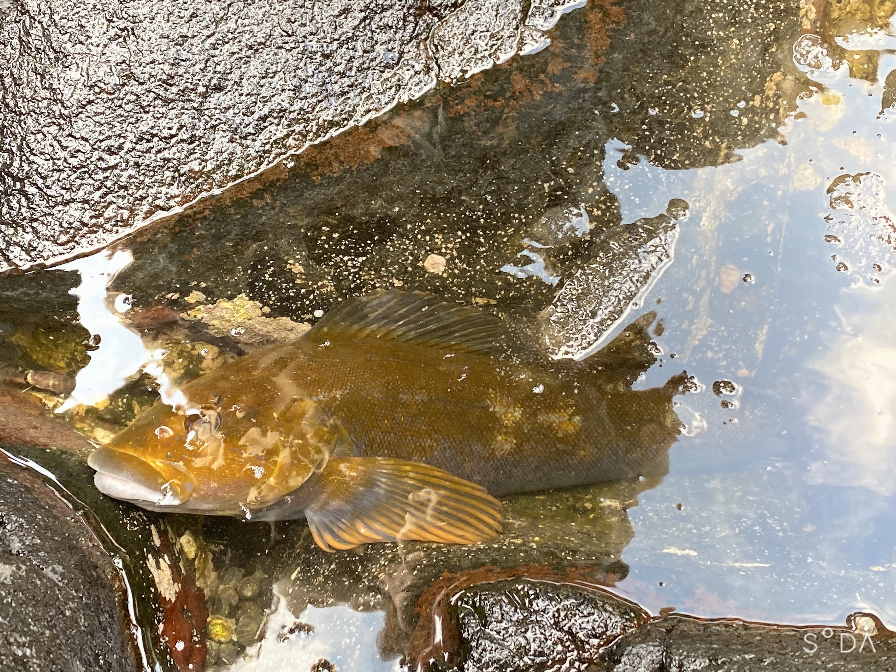

【ロックフィッシュ釣り方入門】アイナメのエキスパートアングラーがタックル・リグ・釣り方を徹底解説！
アイナメはロックフィッシュの定番ターゲットで、北海道や東北などの人気エリアでは50cmクラスの大型を身近な漁港で狙うことができます。今回は北海道のロックフィッシュエキスパートと一緒にアイナメ狙いにおすすめのタックル・リグ・釣り方をわかりやすく解説します。アイナメが釣れずに悩んでいるロックフィッシュのビギナーは必見です！
アイナメ狙いのロックフィッシュゲームに挑戦してみよう！

石崎健太郎の好きな魚
パッチの好きな魚
- マグロ
- カツオ
- サンマ
オレはつよいの好きな甲殻類
ヤドカリ
アサリ
エビ
| 氏名 |
魚の種類 |
| 石崎健太郎 |
アブラコ |
ソイ |
マツカワカレイ |
| パッチ |
マグロ |
カツオ |
サンマ |
| オレはつよい |
ヤドカリ |
アサリ |
エビ |